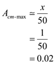
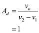

Step 1:
Refer to Figure P2.62 in the textbook.
The expression for the common mode gain,  of the differential amplifier is,
of the differential amplifier is,
The worst case common-mode gain is obtained when it has maximum value.
Simplify the expression further.
Consider that all the resistors are .
The range of is,
Similarly, the range of is,
Step 2:
The maximum value of  is obtained when the values of are minimum. Select minimum values of , to get worst-case common-mode gain.
is obtained when the values of are minimum. Select minimum values of , to get worst-case common-mode gain.
Substitute these values in the equation of  to find the value of
to find the value of  .
.
Rearrange the equation to find the value of .
Simplify the expression further.
Step 3:
Consider that the value of .
Calculate the worst-case common-mode gain.
Consider that the value of  .
.
Calculate the worst-case common-mode gain.

Consider that the value of .
Calculate the worst-case common-mode gain.
Thus, the values of worst-case common-mode gain, for  values of 0.1, 1, and 5 are respectively, , , and
values of 0.1, 1, and 5 are respectively, , , and  .
.
Step 4:
The expression for the common mode rejection ratio, CMRR is,
Find the differential gain,  , assuming all the resistances are equal to
, assuming all the resistances are equal to  .
.
The output voltage of a differential amplifier using super position principle is,
Substitute  for all resistance values.
for all resistance values.
Step 5:
Therefore, the differential mode gain,  is,
is,

Substitute 1 for  , and in the expression for CMRR.
, and in the expression for CMRR.
Consider that the value of  .
.
Calculate the common-mode rejection ratio.
Step 6:
Consider that the value of  .
.
Calculate the worst-case common-mode gain.
Consider that the value of  .
.
Calculate the worst-case common-mode gain.
Thus, the values of common-mode rejection ratio for  values of 0.1, 1, and 5 are respectively, , , and
values of 0.1, 1, and 5 are respectively, , , and  .
.